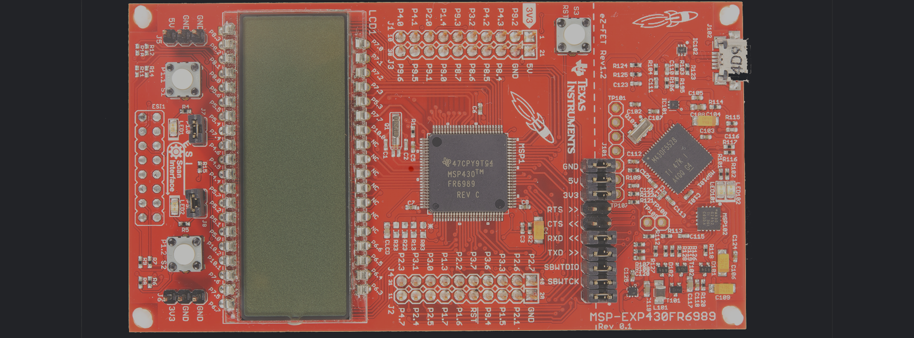
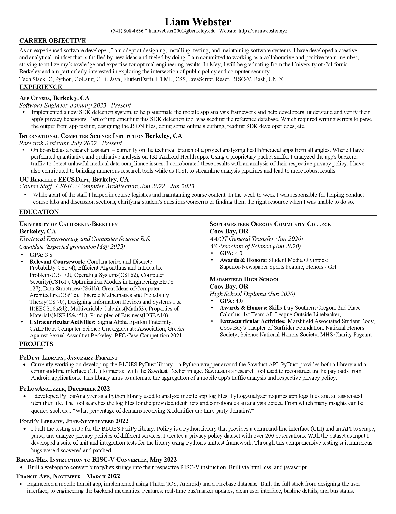

Intro
Hi, my name is Liam Webster. I am an experienced software developer – adept at designing, installing, testing, and maintaining software systems. I have developed a creative and analytical mindset that is thrilled by new ideas and fueled by doing. I am committed to working as a collaborative and positive team member, striving to utilize my knowledge and expertise for optimal engineering results. In May, I will be graduating from the University of California Berkeley and am particularly interested in exploring the intersection of public policy and computer security.
A little bit more about me. I am from a small town on the Oregon Coast. I’m a young hearted excited individual. I received my high school diploma from Marshfield High School. During that time I also attended Southwestern Oregon Community College and received my Associates of Arts and Associates of Sciences graduating with honors. I am now attending UC Berkeley currently studying Electrical Engineering and Computer Science; with aims to earn certification from the Jacobs Institute of Design in Innovative Design. I enjoy thinking, learning and bringing ideas to life. I am a hobby junky-- some of which include: surfing, backpacking, fly-fishing, coding, and automotive tinkering. I love projects and working with people-- reach out if your looking for an extra set of hands. Thanks for the time.
Projects
Software:
PyDust Library:
Date: Present
Description: Currently working on developing the BLUES PyDust library - a Python wrapper around the Sawdust API. PyDust provides both a library and a command-line interface (CLI) to interact with the Sawdust Docker image. Sawdust is a research tool used to reconstruct traffic payloads from Android applications. This library aims to automate the aggregation of a mobile app's traffic analysis and respective privacy policy.
PyLogAnalyzer:
Date: December 2022
Description: I developed PyLogAnalyzer as a Python library used to analyze mobile app log files. PyLogAnalyzer requires app logs files and an associated identifier file. The tool searches the log files for the provided identifiers and corroborates an analysis object. From which many insights can be queried such as... "What percentage of domains receiving X identifier are third party domains?"
View Project
PoliPY:
Date: June-September 2022
Description: I built the testing suite for the BLUES PoliPy library. PoliPy is a Python library that provides a command-line interface (CLI) and an API to scrape, parse, and analyze privacy policies of different services. I created a privacy policy dataset with over 200 observations. With the dataset as input I developed a suite of unit and integration tests for the library using Python's unittest framework. Through this comprehensive testing suit numerous bugs were discovered and patched.
View Project
Fake vs Reals News Application:
Date: July 2022
Description: Compiled a labeled dataset with over 70 thousand article observations. Performed preliminary EDA. Built a vectored corpus from both the article's title and text, which was then run through PCA. Numerous models were built using: K-Means, Random Forests, and Neural Networks. The final model presented was an 11 layer sequential neural net which produced an overall classification rate of 96 percent.
View Project
RISC-V Instruction to Binary/Hexadecimal Instruction:
Date: Feburary 2022
Description: Website for converting binary/hex instruction into RISC-V instruction. Implemented via html, css, and Javascript.
View Project
ransit App:
Date: October 2021
Description: Engineered a mobile phone transit app, implemented using flutter(IOS, Android) and a Firebase database. Features: real-time bus/marker updates, clean user interface, busline details, and bus status.
View Project
Account Manager:
Date: May 2021
Description: Engineered a password managing solution; using a local PostgreSQL database and a Python user interface. Features: username|email|password|misc categorical storage, and a fully original encryption algorithm based on RSA.
Version Control System:
Date: April 2021
Description: Implemented a version control system via Java. Based on Git, with features such as add, commit, branch, checkout, and log all functional.
Hardware:

S1XT33N - a voice controlled car:
Date: March 2022
A voice-controlled car, able to respond to turn right, left, and go straight commands. Powered by an MSP launchpad the project implements key system components: analog sensor interface, classification of collected data, and system control(closed loop feedback). This project was completed as part of UCB's EECS: 16b course curriculum.
View Project
CV

Contact